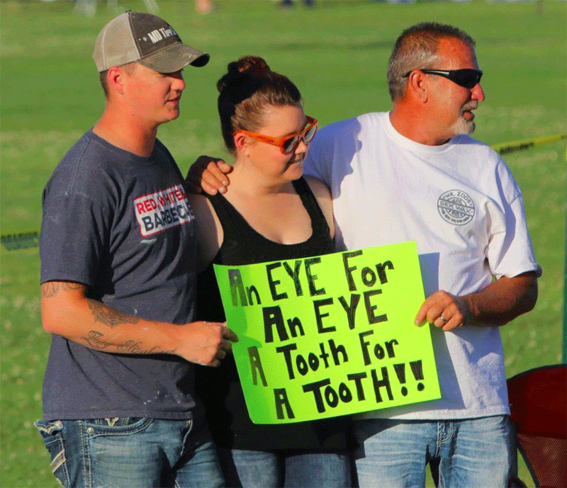

Fondamenti di Economia Comportamentale
#2
ottobre 2024
Apprendere da nuove informazioni
Le persone sono inondate continuamente da nuove informazioni provenienti da più fonti: internet, tv, esperienze proprie e altrui, …
Sembrerebbe una buona cosa, no? Beh, non necessariamente. Dipende da come le informazioni vengono elaborate e interpretate.
Stiamo per vedere che:
- L’interpretazione delle informazioni è spesso influenzata da bias.
- Questi bias condizionano i processi decisionali e possono avere importanti conseguenze.
Aggiornamento bayesiano
- La teoria economica spesso assume che gli agenti rispondano a nuove informazioni aggiornando le proprie aspettative secondo la regola di Bayes.
Regola di Bayes
\[ Prob \left( A \mid B \right) = \frac{Prob \left( B \mid A \right) \times Prob \left( A \right)}{Prob \left( B \right)} \]
\(A\) e \(B\) sono eventi.
\(Prob \left( A \right)\) e \(Prob \left( B \right)\) sono le probabilità di osservare \(A\) e \(B\).
\(Prob \left( A \mid B \right)\) e \(Prob \left( B \mid A \right)\) sono, rispettivamente, la probabilità condizionata di osservare \(A\) dato \(B\) e la probabilità condizionata di osservare \(B\) dato \(A\). \(Prob \left( A \mid B \right)\) è cioè la probabilità che si verifichi \(A\) essendosi verificato \(B\), mentre \(Prob \left( B \mid A \right)\) è la probabilità che si verifichi \(B\) essendosi verificato \(A\).
Aggiornamento bayesiano: esempio 1
Domanda: Qual è la probabilità che io abbia 37 anni o più?
Per rispondere (in modo anonimo) puoi:
- Andare su www.slido.com e inserire il codice
2183 504. - Scansionare il codice QR qui sotto.
- Andare su www.slido.com e inserire il codice
Le risposte verranno mostrate nella slide successiva.
Aggiornamento bayesiano: esempio 1 (cont)
Aggiornamento bayesiano: esempio 1 (cont)
- Nuova informazione: Sono nato dopo che i Paesi Bassi hanno vinto gli Europei di calcio del 1988.
Aggiornamento bayesiano: esempio 1 (cont)
Domanda: Alla luce della nuova informazione che hai ricevuto, qual è la probabilità che io abbia 37 anni o più?
Per rispondere (in modo anonimo) puoi:
- Andare su www.slido.com e inserire il codice
3259 198. - Scansionare il codice QR qui sotto.
- Andare su www.slido.com e inserire il codice
Aggiornamento bayesiano: esempio 1 (cont)
Aggiornamento bayesiano: esempio 1 (cont)
Domanda: Alla luce della nuova informazione che hai ricevuto, qual è la probabilità che io abbia 37 anni o più?
La tua risposta è stata zero?
Se si, congratulazioni! Hai appena aggiornato le tue aspettative utilizzando la regola di Bayes.
Ora facciamo i calcoli.
Aggiornamento bayesiano: esempio 1 (cont)
- \(A =\) Ho 37 anni o più.
- \(B =\) Sono nato dopo che i Paesi Bassi hanno vinto Euro 1988.
- Probabilità che io abbia 37 anni o più in assenza di altre informazioni: \[ Prob \left( A \right) = p \in \left[ 0, 1 \right] \]
- Probabilità che io sia nato dopo che i Paesi Bassi hanno vinto UEFA Euro 1988: \[ Prob \left( B \right) = 1 \]
Aggiornamento bayesiano: esempio 1 (cont)
- Probabilità che io sia nato dopo che i Paesi Bassi hanno vinto UEFA Euro 1988 se ho 37 anni o più: \[ Prob \left( B \mid A \right) = 0 \]
- Usando la regola di Bayes, la probabilità che io abbia 37 anni o più essendo nato dopo che i Paesi Bassi hanno vinto UEFA Euro 1988 è quindi: \[ Prob \left( A \mid B \right) = \frac{Prob \left( B \mid A \right) \times Prob \left( A \right)}{Prob \left( B \right)} = \frac{0 \times p}{1} = 0 \]
Aggiornamento bayesiano: esempio 2
- John vuole comprare un’auto nuova ed è indeciso tra due modelli: Sporty e Comfy.

- John non sa quale modello gli darebbe maggiore soddisfazione. Per questo motivo decide di informarsi su Internet, chiedere agli amici e così via.
Aggiornamento bayesiano: esempio 2 (cont)
Ogni nuova informazione ricevuta da John è detta “segnale”.
Ad esempio, se John legge una recensione che consiglia l’acquisto di Sporty, allora riceve un “segnale Sporty”.
Supponiamo che John abbia ricevuto un segnale Sporty. Come dovrebbe aggiornare le sue aspettative?
- Denotiamo con \(p\) e \(1-p\), rispettivamente, le probabilità a priori che John assegna al fatto che Sporty e Comfy siano meglio: \[ Prob \left( \text{Sporty è meglio} \right) = p \quad Prob \left( \text{Comfy è meglio} \right) = 1 - p\]
Aggiornamento bayesiano: esempio 2 (cont)
Denotiamo con \(\theta\) la probabilità che John assegna al fatto che un segnale sia preciso: \[ \begin{multlined} Prob \left( \text{segnale Sporty} \mid \text{Sporty è meglio} \right) \\ = Prob \left( \text{segnale Comfy} \mid \text{Comfy è meglio} \right) = \theta \end{multlined} \]
Il parametro \(\theta\) cattura fattori come, ad esempio, la fiducia che John ripone nelle opinioni altrui.
- Analogamente, \(1 - \theta\) è la probabilità che John assegna al fatto che il segnale sia impreciso: \[ \begin{multlined} Prob \left( \text{segnale Sporty} \mid \text{Comfy è meglio} \right) \\ = Prob \left( \text{segnale Comfy} \mid \text{Sporty è meglio} \right) = 1 - \theta \end{multlined} \]
Aggiornamento bayesiano: esempio 2 (cont)
Probability complessiva di ricevere un segnale Sporty:
\[ \begin{split} Prob \left( \text{segnale Sporty} \right) & = Prob \left( \text{segnale preciso} \right) \times Prob \left( \text{Sporty è meglio} \right) \\ & \phantom{aaa} + Prob \left( \text{segnale impreciso} \right) \times Prob \left( \text{Comfy è meglio} \right) \\ & = \theta p + \left( 1 - \theta \right) \left(1 - p \right) \end{split} \]
Usando la regola di Bayes troviamo dunque:
\[ \begin{multlined} Prob \left( \text{Sporty è meglio} \mid \text{segnale Sporty} \right) \\[4pt] \begin{aligned} \phantom{aa} & = \frac{Prob \left( \text{segnale Sporty} \mid \text{Sporty è meglio} \right) \times Prob \left( \text{Sporty è meglio} \right)}{Prob \left( \text{segnale Sporty} \right)} \\[1pt] \phantom{aa} & = \frac{\theta p}{\theta p + \left( 1 - \theta \right) \left(1 - p \right)} \end{aligned} \end{multlined} \]
Aggiornamento bayesiano: esempio 2 (cont)
- Supponi che:
- La probabilità a propri che John assegna al fatto che Sporty sia meglio è \(p = 0.4\).
- La probabilità che John assegna al fatto che i segnali siano precisi è \(\theta = 0.9\).
- Se John riceve un segnale Sporty, la probabilità che dovrebbe assegnare a posteriori al fatto che Sporty sia meglio è: \[ \begin{split} Prob \left( \text{Sporty è meglio} \mid \text{segnale Sporty} \right)& = \frac{0.4 \times 0.9}{0.4 \times 0.9 + 0.6 \times 0.1} \\[4pt] & = \frac{0.36}{0.42} \approx 0.86 \end{split} \]
I problemi dell’aggiornamento bayesiano
L’aggiornamento bayesiano è un metodo per prendere decisioni nel più razionale possibile.
Tuttavia, usare la regola di Bayes non è sempre facile.
- Può comportare calcoli macchinosi.
- Richiede di assegnare valori specifici a tutte le variabili coinvolte nel processo di aggiornamento (nel nostro esempio, \(p\) e \(\theta\)).
- Non sorprende quindi che le persone soffrano di bias nel modo in cui interpretano le informazioni. Ci concentreremo su due di questi: il bias confermativo e la legge dei piccoli numeri.
Bias confermativo
Bias confermativo
La tendenza degli individui a interpretare nuove informazioni in modo da confermare o sostenere le loro convinzioni e opinioni iniziali.
- Ciò è vero in particolare quando le informazioni sono ambigue.
Bias confermativo: un esempio
- Immagina che John legga: “I produttori di Sporty hanno fatto del loro meglio per creare un’auto che consumi poco e sia piacevole da guidare”.
- I produttori di Sporty sono riusciti nel loro intento? Non lo sappiamo.
Se John ritiene che Sporty sia meglio, potrebbe interpretare queste informazioni come: “I produttori di Sporty hanno creato un’auto che consuma poco ed è piacevole da guidare”.
Di conseguenza, potrebbe finire con il riporre eccessiva fiducia nella propria opinione.
Bias confermativo: evidenza sperimentale
- Darley e Gross (1983) hanno chiesto ai partecipanti a un esperimento di valutare le capacità di una bambina di 9 anni.
Per leggere l’articolo, clicca QUI.
Bias confermativo: evidenza sperimentale (cont)
A metà dei partecipanti in ciascun gruppo di priming (basso reddito vs. classe media) è stato mostrato un video in cui la bambina rispondeva ad alcune domande. All’altra metà non è stato mostrato alcun video.
Il video era stato costruito in modo da essere incoerente e poco informativo sulle capacità della bambina:
- Rispondeva ad alcune domande in modo corretto e ad altre in modo errato.
- Sembrava abbastanza attenta in alcune parti del video e poco reattiva e distratta in altre.
Bias confermativo: evidenza sperimentale (cont)
- Ai partecipanti è stato poi chiesto di leggere le risposte della bambina a una serie di domande scritte e valutarne le capacità.
| Trattamento | Giudizio | ||
|---|---|---|---|
| Matematica | Comprensione del testo | Arti liberali | |
| Basso reddito & no video | 3.98 | 3.90 | 3.85 |
| Classe media & no video | 4.30 | 4.29 | 4.03 |
| Basso reddito & video | 3.79 | 3.71 | 3.04 |
| Classe media & video | 4.83 | 4.67 | 4.10 |
Bias confermativo: evidenza sperimentale (cont)
I partecipanti dei gruppi “basso reddito” hanno valutato la capacità della bambina in modo inferiore rispetto ai partecipanti dei gruppi “classe media”.
Il modo in cui i partecipanti hanno interpretato lo stesso video dipende dalle informazioni iniziali sulla bambina:
- Il video ha aumentato (ridotto) la percezione di abilità della bambina da parte dei partecipanti indotti a ritenere che essa provenisse da un ambiente di classe media (a basso reddito).
Bias confermativo: evidenza sperimentale (cont)
- Intuizione
- I partecipanti hanno svilupato una convinzione sulle capacità della bambina sulla base di ipotesi sul rapporto tra status socio-economico e abilità individuali.
- Hanno poi interpretato ciò che hanno visto nel video in modo da renderlo coerente con la loro convinzione.
Bias confermativo: ulteriore evidenza sperimentale
- Lord, Ross, e Lepper (1979) hanno presentato ai partecipanti a un esperimento due studi, entrambi fittizi, sulla pena di morte e sulla sua efficacia come deterrente per l’omicidio.

Per leggere l’articolo, clicca QUI.
Bias confermativo: ulteriore evidenza sperimentale (cont)
- I partecipanti hanno letto in ordine casuale:
- Uno studio che confermava le loro convinzioni iniziali sulla pena capitale.
- Uno studio che contraddiceva queste convinzioni iniziali.
- Uno studio che confermava le loro convinzioni iniziali sulla pena capitale.
- A ciascun individuo sono state quindi presentate informazioni a sostegno della e in opposizione alla teoria dell’effetto deterrente della pena di morte.
Bias confermativo: ulteriore evidenza sperimentale (cont)
- Dopo aver letto gli articoli, ai partecipanti sono state poste domande riguardanti:
- Il loro atteggiamento nei confronti della pena di morte.
- Quanto gli studi fossero stato condotto bene o male e quanto apparissero convincenti come prova dell’effetto deterrente della pena di morte.
Bias confermativo: ulteriore evidenza sperimentale (cont)
Esempio di informazione pro effetto deterrente
Kroner e Phillips (1977) hanno confrontato i tassi di omicidio nell’anno precedente e in quello successivo all’adozione della pena capitale in 14 Stati. In 11 dei 14 Stati, i tassi di omicidio sono più bassi dopo l’adozione della pena di morte. Questa ricerca sostiene l’effetto deterrente della pena di morte. […]
Esempio di informazione contro effetto deterrente
Palmer e Crandall (1977) hanno confrontato i tassi di omicidio in 10 coppie di Stati adiacenti con leggi diverse sulla pena capitale. In 8 delle 10 coppie, il tasso di omicidi è più alto nello Stato con la pena capitale. Questa ricerca si oppone all’effetto deterrente della pena di morte. […]
Bias confermativo: ulteriore evidenza sperimentale (cont)
- In media, gli individui hanno valutato positivamente le prove coerenti con la loro opinione iniziale e valutato negativamente le prove in contrasto con la loro opinione.
- I sostenitori della pena capitale hanno ritenuto lo studio a favore della teoria dell’effetto deterrente significativamente più convincente e meglio condotto rispetto a quello contro di essa.
- Al contrario, gli oppositori della pena capitale hanno considerato lo studio a favore della teoria dell’effetto deterrente significativamente meno convincente e meno ben condotto.
Bias confermativo: ulteriore evidenza sperimentale (cont)
- La conseguenza dell’esposizione dei due gruppi a un identico corpo di prove empiriche inconcludenti è stata un aumento della polarizzazione delle opinioni.
- Alla fine dell’esperimento, i sostenitori (oppositori) della pena di morte hanno riportato, in media, di essere più (meno) favorevoli rispetto all’inizio.
Legge dei piccoli numeri
Legge dei piccoli numeri
L’errata convinzione che piccoli campioni siano rappresentativi della popolazione da cui sono estratti.
Immagina che John cerchi nuove informazioni chiedendo a sconosciuti incrociati per strada la loro opinione su Sporty e Comfy.
Supponi che ciascuna delle prime quattro persone fornisca a John un “segnale Comfy”.
Legge dei piccoli numeri (cont)
Un campione di 4 intervistati è troppo piccolo per essere rappresentativo della popolazione!
Tuttavia, a causa della legge dei piccoli numeri, John potrebbe interpretare il risultato come dovuto a differenze di qualità piuttosto che al caso.
Potrebbe inoltre aspettarsi che anche il prossimo segnale sia a favore di Comfy.
Legge dei piccoli numeri (cont)
- La legge dei piccoli numeri può essere coniugata in due modi diversi.
Fallacia dello scommetitore
L’errata convinzione che se un evento casuale si è verificato più frequentemente del normale in passato, allora è meno probabile che si verifichi in futuro (o viceversa).
Può verificarsi quando la probabilità di ogni risultato è nota.
Fallacia della mano calda
La convinzione eccessivamente ottimistica che chi ha avuto successo in un compito o un’attività in passato avrà probabilmente successo anche in futuro.
Può verificarsi quando la probabilità di ogni risultato non è nota.
Fallacia dello scommettitore
- Sei sedutx al tavolo della roulette e devi scegliere su quale colore puntare. Il risultato degli ultimi 6 giri di roulette è:
Rosso Rosso Rosso Rosso Rosso Rosso
- Su quale colore scommetti?
Nel 1913, al casinò di Monte Carlo, la roulette si fermò sul Nero per 26 volte di fila, facendo perdere agli scommettitori enormi somme di denaro puntando contro quella che ritenevano una striscia positiva che non poteva durare.
Tuttavia, i giri di roulette sono eventi indipendenti: il passato non ha alcun effetto su ciò che accadrà in futuro.
Fallacia dello scommettitore (cont)
Sappiamo che ogni giro di roulette ha il 50% di probabilità di essere Rosso e il 50% di essere Nero (ignoriamo lo Zero).
Dobbiamo aspettarci che l’esito del 50% circa dei giri sia Nero?
- Solo se il numero di giri è molto elevato.
- Al contrario, se la roulette viene fatta girare un numero relativamente piccolo di volte, potremmo osservare una striscia di risultati uguali.
Qui entra in gioco la fallacia. Come osservato da Tversky e Kahneman (1971), le persone si aspettano che le caratteristiche essenziali di un processo casuale si riflettano in ogni segmento del processo, anche se piccolo.
Fallacia dello scommettitore (cont)
- Per dirla in altro modo: nel considerare quattro giri di roulette, le persone considerano la sequenza
Nero Rosso Nero Rosso
come molto più rappresentativa rispetto alla sequenzaRosso Rosso Rosso Rosso
- Il caso è spesso visto come un processo autocorrettivo: dopo aver osservato una serie di Rosso, la maggior parte delle persone crede erroneamente che dovrà ora uscire Nero, presumibilmente perché il verificarsi di Nero risulterà in una sequenza più rappresentativa rispetto al verificarsi di un ulteriore Rosso.
Kelly Shue sulla fallacia dello scommettitore
Per leggere l’articolo, clicca QUI.
Fallacia della mano calda
- Il termine deriva dal detto che gli atleti hanno le mani calde quando segnano ripetutamente. Ciò fa spesso credere che essi abbiano elevate possibilità di successo nei tentativi di tiro futuri.
- Spesso questa convinzione è distorta in senso ottimistico.
Fallacia della mano calda: evidenza sperimentale
Gilovich, Vallone, e Tversky (1985) hanno esaminato le statistiche di tiro dei Philadelphia 76ers durante la stagione NBA 1980-81.
Hanno poi confrontato queste statistiche con le aspettative di un campione di giocatori e di appassionati di basket.
Ai partecipanti è chiesto di pensare a un ipotetico giocatore con una percentuale di realizzazione del 50%.
Per leggere l’articolo, clicca QUI.
Fallacia della mano calda: evidenza sperimentale (cont)
| Probabilità di segnare un tiro… | ||
|---|---|---|
| …se ne ha appena sbagliato uno | …se ne ha appena segnato uno | |
| Cosa si aspettano i fan | 42% | 61% |
| Cosa si aspettano i giocatori | 50% | 63% |
| Stime basate sulle statistiche di tiro | 54% | 51% |
- Fan e giocatori si aspettano un consistente effetto della mano calda, molto più grande di qualsiasi effetto esista nella realtà.
Concetti chiave
- Prima di procedere, prenditi un momento per assicurarti di aver compreso questi concetti:
- Aggiornamento bayesiano
- Bias confermativo
- Legge dei piccoli numeri
- Fallacia dello scommettitore
- Fallacia della mano calda